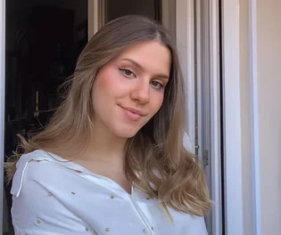

María Martínez Moyano
"El arte no reproduce lo invisible, sino que hace visible lo que no siempre lo es". - Paul Klee
INICIO
¡Hola! Soy María, y como graduada en Publicidad y Relaciones Públicas en la Universidad de Sevilla, he desarrollado una profunda pasión por el diseño, al arte y la comunicación.
El arte siempre ha estado presente en mi vida, ya que lo considero una manera de expresarme sin límites. Desde pequeña disfrutaba imitando cuadros famosos dándoles un toque propio y diferente, empecé a dibujar y encontré algo que me llenaba y me permitía expresar todo lo que llevaba dentro que no salía con simples palabras. Soy una persona llena de energía, y siempre me ha gustado contar historias y expresar ideas pintando, escribiendo y comunicando.

Por ello, en 2019 estudié el bachillerato artístico, lo que me aportó conocimientos sobre los fundamentos del arte, diseño y técnicas gráficas, entre otros. Esto me ayudó a ir descubriendo mi estilo artístico y a definir lo que quería para mi futuro.
Como persona creativa que disfruta comunicando y conectando con los demás, descubrí el mundo de la publicidad y supe enseguida que era mi camino: me permitía unir dos de mis grandes pasiones, el arte y la comunicación. Por eso decidí estudiar Publicidad y Relaciones Públicas, una carrera que me ha aportado muchísimo y que ha reforzado mi vocación.
Durante la carrera ―y fiel a mi espíritu inquieto― descubrí que sí, la publicidad era lo mío… pero también lo eran el diseño, las redes sociales, la fotografía y muchas otras áreas que despertaron mi curiosidad. Ese recorrido me llevó a encontrar una dirección más clara: especializarme en diseño gráfico y desarrollo web, dos disciplinas que me permiten unir la creatividad con la construcción de experiencias visuales y digitales.
A través de este portfolio podrás ver cómo traduzco ideas en soluciones gráficas y digitales innovadoras, capaces de cautivar a la audiencia y transmitir de forma efectiva la esencia de una marca. Estoy preparada para aportar creatividad, visión estética y proactividad a tu equipo, contribuyendo al desarrollo de proyectos memorables e impactantes.
Ahora que ya sabes un poco más sobre mí, te invito a explorar mis trabajos en el apartado “Proyectos”, situado arriba a la derecha. ¡Estoy deseando que los veas!